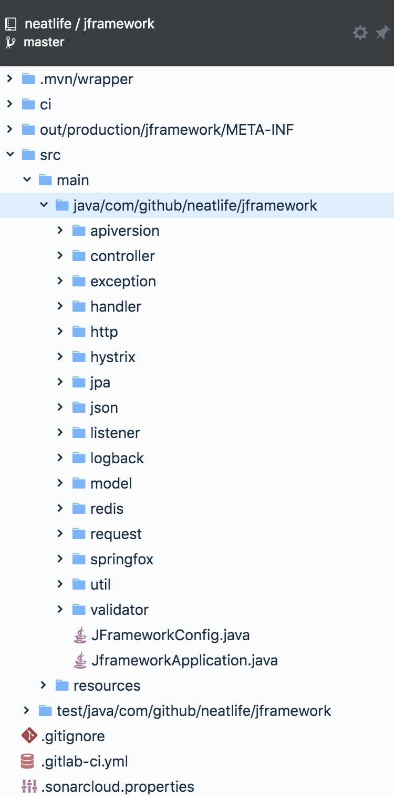

目标：减少重复代码，提高开发效率，项目地址：https://github.com/neatlife/jframework
欢迎star，欢迎pr(求star, 求star, 求star)
可封装功能列表
| E文 | 功能 | 目前作用 |
|---|---|---|
| controller | 控制器父类 | 简化控制器里的常见操作 |
| exception | 异常 | 统一全局业务异常操作 |
| handler | 异常拦截 | 全局异常拦截到日志里 |
| http | 请求响应实体 | 统一全局响应实体 |
| hystrix | hystrix事件拦截 | 熔断时发送报警邮件 |
| jpa | jpa非业务重复代码封装 | 自动给deleted_at, updated_at, created_at赋值 |
| json | 响应json数据的二次处理 | 自动格式化金额小数位数 |
| listener | spring boot框架事件 | 在框架启动时给util注入service实例 |
| logback | 自定义logback日志输出 | 将日志输出到elk的redis，方便elk统一进行日志处理 |
| model | 基础jpa实体 | 包含deleted_at, updated_at, created_at字段的实体 |
| redis | 自定义redis序列化和反序列化操作 | 使用GenericJackson2JsonRedisSerializer序列化redis值，提高可读性 |
| request | 自定请求数据的解析 | 处理json请求 |
| springfox | 自定义springfox文档解析 | ApiClass支持文档描述引用 |
| util | 常用工具收集 | 比如json, http请求等常用工具类 |
| validator | 请求参数自定义校验 | 检查参数长度 |
| apiversion | 支持不同的api的版本到不同的控制器逻辑 | 参考 MainController |
目前已经实现上面列表中的所有功能并开源

一些关键的点
json & http客户端的封装
json & http客户端经常使用，自行编写容易踩坑，所以直接拿dew框架的工具类进行了集成
https://github.com/gudaoxuri/dew-common
需要同时发出多个http请求时可以使用parallelStream()技术，可显著减少请求总时长
List<String> paramList = ...
paramList.parallelStream().forEach(param -> {
http post with param
})
经测试， 26个请求，使用parallelStream将请求总时间从23.803减少到1.731秒，提升效果显著
MapperUtil工具类的封装
因为java里对象复制非常频繁，所以封装了MapperUtil, 虽然复制对象只需下面两行代码
Class1 class1 = new Class1();
BeanUtils.copyProperties(source, class1);
但是由于非常频繁的类似代码，一个项目项目可能出现上千次这种复制，所以将上面两行代码合并成了一行
Class1 class1 = MapperUtil.to(source, class1);
核心实现代码如下:
public static <SOURCE, TARGET> TARGET to(SOURCE source, Class<TARGET> targetClass) {
TARGET target = BeanUtils.instantiateClass(targetClass);
BeanUtils.copyProperties(source, target);
return target;
}
虽然使用了反射技术，但经过测试无性能问题
elk日志
使用redis进行了日志中转，所以logstash需要从redis读取日志输出到elasticsearch
logstash从redis读取日志输出到elasticsearch的配置
input {
redis {
data_type => "list"
key => "logstash"
host => "127.0.0.1"
port => 6379
threads => 5
codec => "json"
}
}
filter {
}
output {
elasticsearch {
hosts => ["elasticsearch:9200"]
index => "logstash-%{type}-%{+YYYY.MM.dd}"
document_type => "%{type}"
workers => 1
template_overwrite => true
}
stdout{}
}
因为elasticsearch里日志会越来越大，所以需要定时清理，定时清理elasticsearch数据
参考：https://www.jianshu.com/p/458421dac807
核心代码如下
#!/bin/bash
# filename:deleteEsData.sh
# 每天2点定时删除es中指定日期的数据
# crontab: 0 2 * * * sh /home/scripts/deleteEsData.sh >> /home/scripts/logs/deleteEsData.run.log 2>&1
# 如今天是2017-09-21 50天前是2017.08.02
# createdate: 20190921
today=`date +%Y-%m-%d`;
echo "今天是${today}"
# 不指定参数时，默认删除daynum天前以logs-开头的数据
daynum=51
# 当参数个数大于1时，提示参数错误
if [ $# -gt 1 ] ;then
echo "要么不传参数，要么只传1个参数!"
exit 101;
fi
# 当参数个数为1时，获取指定的参数
if [ $# == 1 ] ;then
daynum=$1
fi
esday=`date -d '-'"${daynum}"' day' +%Y.%m.%d`;
echo "${daynum}天前是${esday}"
curl -XDELETE http://127.0.0.1:9200/logs-${esday}
echo "${esday} 的log删除执行完成"
全局业务异常
定义全局业务异常，方便进行全局业务异常的捕获和统一处理 ControllerExceptionHandler
核心处理逻辑如下：
@ExceptionHandler({BusinessRuntimeException.class})
@ResponseBody
public Response handlerBusinessException(BusinessRuntimeException ex) {
return new Response<Map>(HttpCode.SUCCESS.toString(), ex.getMessage(), Maps.newHashMap());
}
这样的好处是方便对错误的返回数据进行格式化
利用框架事件，简化util
RedisUtil工具类需要RedisTemplate操作实例对象，如果在RedisUtil使用Autowired自动注入RedisTemplate，则需要RedisUtil也是Service，这将RedisUtil的调用变得复杂化了（使用前必须先注入RedisUtil以获取RedisTemplate对象）
利用框架事件，可在框架启动时，获取RedisTemplate对象，手动注入RedisUtil里
核心实现代码如下:
@Component
public class ApplicationStartedEventListener implements ApplicationListener<ApplicationStartedEvent> {
private final RedisTemplate redisTemplate;
private final JFrameworkConfig jFrameworkConfig;
@Autowired
public ApplicationStartedEventListener(RedisTemplate redisTemplate, JFrameworkConfig jFrameworkConfig) {
this.redisTemplate = redisTemplate;
this.jFrameworkConfig = jFrameworkConfig;
}
@Override
public void onApplicationEvent(ApplicationStartedEvent event) {
RedisUtil.setRedisTemplate(redisTemplate);
LockUtil.setRedisTemplate(redisTemplate);
DingTalkUtil.setDdUrl(jFrameworkConfig.getNotification().getDingTalkUrl());
}
}
docker 镜像仓库选择
自行搭建镜像仓库不如使用免费稳定的来得高效可靠
可以直接使用了aliyun提供的免费docker镜像仓库
自动维护created_at, updated_at, deleted_at字段
采用了jpa的事件机制，在创建，修改，删除事件发生时自动进行维护
核心代码如下:
@PrePersist
public void touchCreated(BaseEntity target) {
target.setCreatedAt(DateUtil.currentSecond());
target.setUpdatedAt(DateUtil.currentSecond());
}
@PreUpdate
public void touchUpdate(BaseEntity target) {
target.setUpdatedAt(DateUtil.currentSecond());
}
@PreRemove
public void touchDeleted(BaseEntity target) {
target.setDeletedAt(DateUtil.currentSecond());
}
ci/cd的选择
目前ci/cd工具选择非常多，但在生产里用得最多的应该是gitlab和jenkins
目前仍然采用jenkins作为ci/cd工具，gitlab的ci目前个人认为仍然不够成熟
代码质量检测
可以直接试用sonarkube的开放服务，无需自行搭建:
https://sonarcloud.io/dashboard?id=neatlife_jframework
打包分发
一般框架会作为项目的基础依赖，那么能够非常方便的下载这个框架就非常重要了
目前nexus私服仍然是首选，可以使用docker搭建nexus私服：
version: "3"
services:
nexus:
image: sonatype/nexus3
environment:
- INSTALL4J_ADD_VM_PARAMS=-Xms512m -Xmx768m -XX:MaxDirectMemorySize=1g -Djava.util.prefs.userRoot=/nexus-data/javaprefs
volumes:
- ./nexus-data:/nexus-data
ports:
- "8081:8081"
工具类设计
工具类考虑到要易于使用，即使不引用框架，也能很方便的复制过去，所以一般工具类不要有依赖，最好是单个独立的文件，这样方便使用
微服务
由于是微服务形式的部署，所以日志，配置都需要中心化，k8s也是标配
日志选经典的elk
配置中心选择apollo
部署平台可以选择k8s，或者k8s上的istio，目前使用k8s
微服务的k8s模版参考
应用: https://raw.githubusercontent.com/neatlife/jframework/master/k8s.yml
网关: https://raw.githubusercontent.com/neatlife/jframework/master/k8s-gateway.yml
核心区别是kind字段，网关是 DaemonSet 应用是 Deployment
项目参考
完成框架的封装必然少不了很多参考，即使这是个小框架
以下是参考列表
- https://github.com/kmtong/logback-redis-appender
- https://github.com/looly/hutool
- https://github.com/gudaoxuri/dew-common
- https://github.com/gudaoxuri/dew
- https://github.com/xdd-organ/xdd-nasa
- https://github.com/indrabasak/swagger-deepdive
- https://github.com/ityouknow/spring-boot-examples
- https://github.com/WellJay/spring-data-redis-tools
目前文章还在持续更新中，如果对框架开发感兴趣，可加作者微信探讨，也可提pr，issue等